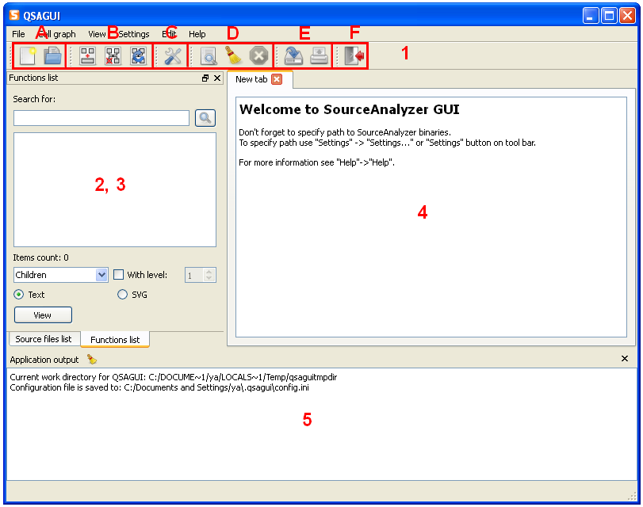

Contents
What is QSAGUI?
Getting started
Create call graph
Link call graphs
Clean call graph
Update call graph
Get funs/files lists
Show call graph
Settings
|
Getting started
At the beginning of work you should select the path to SourceAnalyzer binaries:
"Settings" -> "Settings..." or "Settings" button on tool bar.
Enter the full path to SourceAnalyzer binaries or select "use system path", if SourceAnalyzer is located in system path.
If you are going to work with SVG representation choose path to Graphviz.
For more information see Settings.
All commands end service messages you will see at the bottom of window ("Application output"). To get information about QSAGUI use "Help" -> "About".
Following sections describes components of main window.

1. Tool bars:
A. "New" - "New call graph" window, "Open" - dialog for opening call graph.
B. "Link" - "Link call graphs" window, "Clean" - "Clean call graph" window, "Update" - "Update call graph" window.
C. "Settings" window.
D. "Find" - search dialog, "Clean window" - cleans all areas, "Terminate last process" - terminates last process.
E. "Save file" - dialog for saving content of central widget, "Print" - dialog for printing content of central widget.
F. "Quit" - quit from application.
2. 3. Functions and files lists tabified together.
4. Central widget.
5. Application output: shows commands end service messages.
|